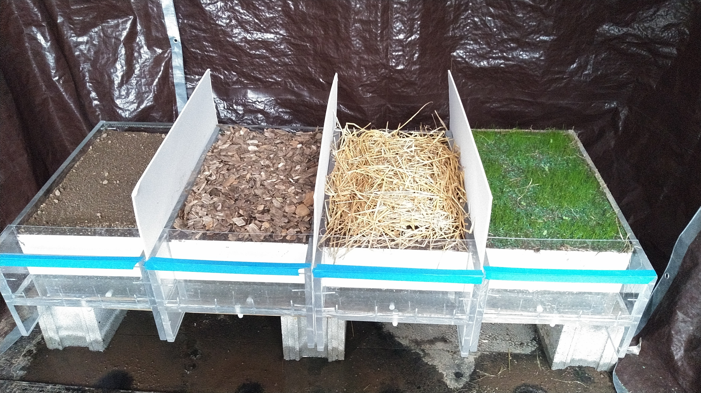
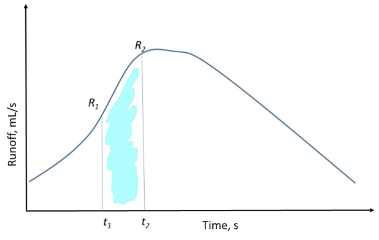

Objective: To evaluate impact of different surface cover conditions on infiltration and runoff characteristics.
Soil boxes representing different cover types will demonstrate how soil surface conditions affect infiltration and runoff timing, rate, and volume, as well as sediment loss. Four soil boxes have been set up with different ground cover types: compacted soil, tilled bare soil with landscaping mulch, tilled bare soil with straw cover, and grassed sod (Fig 1).

Figure 1. Rainfall simulator plots
While the rainfall simulator is running, you should observe changes to the soil surface, the depth of water infiltration over time, and soil splash against the white plot dividers. Once surface runoff starts, you will measure the runoff rate every five minutes to develop a runoff hydrograph.
A rainfall simulator has been built to demonstrate the effects of rainfall on various surface conditions. The instructor will control the power and flowrate of the system while the students collect qualitative and quantitative data. No model, company, or accuracy are necessary to report in this lab.
Measure plot area.
Place rain gauge under the rainfall simulator.
Label a beaker with your group number and the first time step (e.g., Time 1)
Turn the simulator on and record the time rainfall started.
Watch the boxes during the rainfall event, noting the depth of infiltration into the soil box.
Record the time runoff is observed from the white plastic collectors.
Immediately begin collecting 250 mL of sample in a beaker or collect sample for 5 minutes, whichever comes first. Be sure to either note the time required to collect 250 mL in the beaker, or note the volume if collection ended at 5 minutes.
Place the beaker back into your group’s collection of beakers in the order of when samples were taken and label an unused beaker with your group number and next time step.
Collect a runoff sample every five minutes as long as runoff is occurring, recording how long it takes to fill each bottle.
When the rainfall simulator is turned off, immediately take another sample. Either fill to 250 mL or collect for 5 minutes, whichever comes first. Be sure to note the volume if collection ended at 5 minutes.
Once rainfall and runoff have ended, measure and record the depth of water in the rain gauge. Calculate the average precipitation rate in mm/hr (Note: you will need to know the area of the top of the rain gauge for this calculation).
Swirl all of the beakers with samples from your soil plot, line them up in order of when they were collected, and take a picture. Take a picture of other groups’ beakers as well.
Note any changes to the soil surface or any soil splash on the white plot dividers. Take a picture of the soil splash and soil surface.
Note the number and color of runoff samples from the other plots.
Collect runoff data from other plots.
As part of your report, you need to determine the total volume of precipitation (over your plot), infiltration, and runoff. You can assume precipitation is constant, and that infiltration (I) is the difference between the rainfall (P) and runoff volume (R):
\[\begin{equation} I = P - R \tag{Eq. 1} \end{equation}\]
To determine runoff volume for your plot, you need to integrate over the runoff curve. You can do this very simply by using the “Trap” Rule from Calculus.

Figure 2. Example hydrograph
The total volume of runoff between times 1 and 2 would be:
\[\begin{equation} V_{1,2} = \frac{1}{2}\left(R_1 + R_2 \right)\left(t_2 - t_1\right) \tag{Eq. 2} \end{equation}\]
The total volume would be the sum of all the “trapezoids” that comprise your measurements.
Create an X-Y line graph showing the volumetric discharge (in units of cm3/s) over time for ALL soil plots (you should have 3 lines for the 3 soil plots); this is called a hydrograph (e.g. Figure 2).
Compute the total volume (as an equivalent depth) of precipitation, infiltration, and runoff (all in cm) for ALL plots (See “Calculations” and especially Eq. 1 and 2).
Compute the percentage of the runoff depth to the precipitation depth for ALL plots. This is called the runoff ratio and describes the percent of rainfall that ends up as runoff.
NOTE: Remember that all tables and graphs must be numbered and include complete captions, and the raw data should be included with the report.
Which soil box produced runoff first?
Which soil box produced runoff last?
What is the reason for this difference in runoff timing?
Which box produced the most/least runoff? What is the reason for this difference?
Visually assess the water quality of the runoff from each set of soil box samples. In particular look at the rain splash on the white dividers between soil plots.
Does one look “dirtier” than another?
Which one looks “cleaner” than the others?